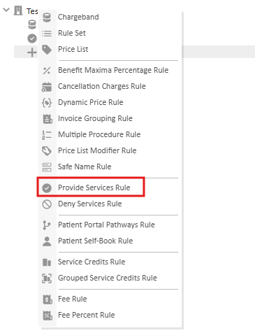
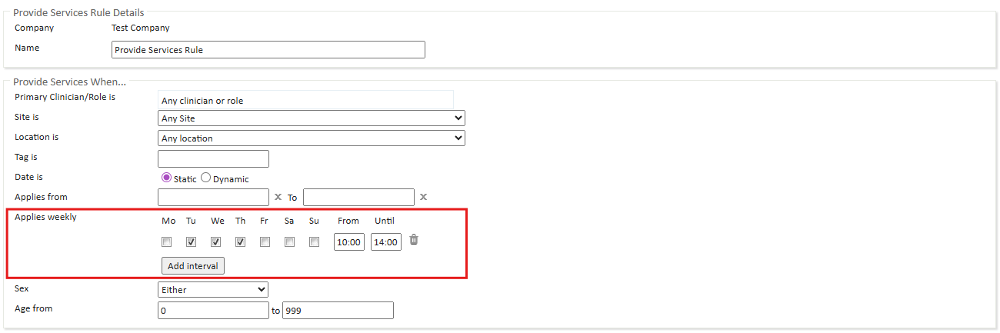
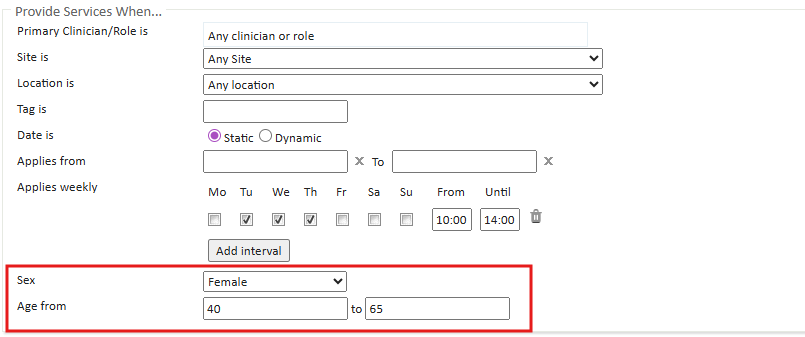

Billing rules utilise a "Applies When" functionality which allows the ability to restrict the application of the rule based on Site, Location, Tag and for some, a date range, allowing for smarter application of rules.
For specific billing rules, time-based intervals, and age and sex-based billing eligibility can now also be configured to restrict when the billing rule is applied.
This article describe:
The following types of Billing Rules can have these restrictions applied to them:
How to configure time-based billing
Time-based billing allows you to add intervals to specify the day of the week and time when the billing rule should apply. There are be slight variations depending on whether you are updating an existing Billing Rule or creating a new Billing Rule.
This example will explain how to configure time-based billing for a new Provide Services rule. Other billing rules with this ability can be configured similarly.

Click Add interval to add any additional billing intervals to the billing rule.
Add this rule to the relevant Charge Band, minding the order of rules on the Charge Band.

The interval is set and the Provide Services rule is saved automatically.
How to configure age and sex-based eligibility
Age and sex-based billing allows you to control the eligibility of the Patient for these services based on their age and selected sex. When new services have been created, they won't automatically be available for booking.
This example will explain how to configure age and sex-based eligibility for a new Provide Services rule, restricting what services can be provided based on the Sex and Age of the patient. Other billing rules with this ability can be configured similarly.
Add this rule to the relevant Charge Band, minding the order of rules on the Charge Band.

The eligibility is set and the Provide Services rule is saved automatically.